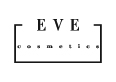

גם לקוחות קטנים ובינוניים
יכולים ליהנות מסטנדרט גבוה
היי, שמי גדי פוליטי, אני איש קריאייטיב העוסק במגוון תחומים, אותם אני רואה כמכלול המשלים את עצמו. מגיל צעיר מאוד אני מצייר ומאייר קריקטורות, קומיקס ואיורים מורכבים. בגיל 22 התחלתי ללמוד במכללת ויצ"ו קנדה ע"ש נרי בלומפילד, בחיפה, שם הייתי סטודנט במחלקה לעיצוב גרפי, וקיבלתי הכשרה מטובי המורים והמרצים בענף העיצוב, הצילום, האיור והפרסום. במקביל למדתי במסלול הכשרת מורים מטעם משרד החינוך וקיבלתי בנוסף תעודת מורה למקצועות העיצוב.
מייד לאחר הלימודים התחלתי לעבוד בענף הפרסום כארט דירקטור במשך 10 שנים, כאשר אני משלב גם את כשרוני בתחום הקופירייטינג, במשרדים: דחף אחד, ראובני פרידן, איי בי דאטה, ערמוני מורדי אוחיון וטמיר כהן. יצאתי לעצמאות ופתחתי את משרד גדי פוליטי ומלווה לקוחות קטנים ובינוניים בכל מה שקשור לפתרונות קריאייטיב ומעניק שירותי עיצוב גרפי, פרסום, מיתוג וקופירייטינג, תוך כדי שירות פרילנס במשרדי הפרסום הגדולים.
לקוחותי נהנים מטיפול צמוד, מניסיוני רב השנים במשרדי הפרסום הגדולים, וממחירים זולים מהמחירים הרווחים בענף הפרסום והעיצוב. באופן כזה, גם לקוחות קטנים ובינוניים, המבקשים לצמוח ולתת פייט לגדולים מהם, יכולים ליהנות מפתרונות שיכולים להזניק אותם קדימה.
אשמח לעמוד לרשותכם, ולהביא את פתרונות הקריאייטיב שלי אליכם, למענכם ולמען הצלחתכם.
גדי פוליטי | טל: 054-6690380 | gadipol@gmail.com
בין לקוחותי:

צילום פורטרט: ראובן קופיצ'ינסקי